A numerical method on the Cahn-Hilliard equation and its relaxed variation
Outline
Introduction
Short overview on the CH equation
- Multiphase coupling equation
- Implicit interface approach
- Two phase flow
Animation of the phasefield in the CH equation
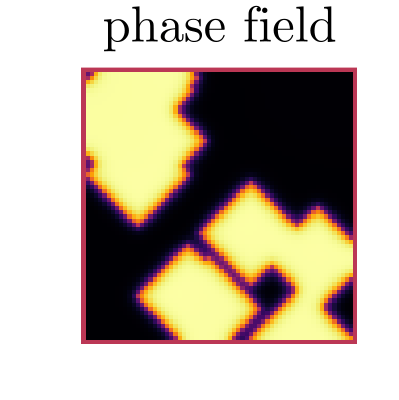
The Cahn-Hilliard (CH) equation
The Cahn-Hilliard Equation:
The aim of the CH equation is to find solutions \( \phi(\vec{x} , t) , \mu(\vec{x} , t): \Omega \times (0,T) \to \mathbb{R} \) such that they satisfy
(Wu 2022)
Variables
| \( \phi : \Omega \times (0,T) \to [-1,1] \) | Phase-field variable |
| \( \mu : \Omega \times (0,T) \to \mathbb{R} \) | Chemical potential variable |
| \( \varepsilon > 0 \) | Interface coefficient |
| \( W(\phi): [-1,1] \to \mathbb{R}^+ \) | Double well potential |
| \( M(\phi): [-1,1] \to \mathbb{R}^+ \) | Mobility coefficient |

Figure 1: Computational Domain \( \Omega \)
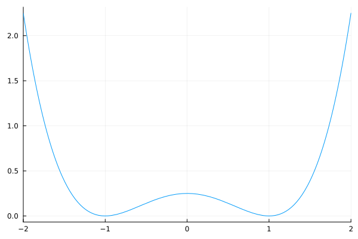
Figure 2: Double well potential \( W(\phi) \)
Assumptions
- Constant mobility: \( M(\phi) \equiv 1 \)
- Polynomial potential: \( W(\phi) = \frac{1}{4} \phi^2(1-\phi^2) \)
- No flow Neumann boundary conditions
Properties of the CH equation
- Mass conservative
- Total energy decreases
- Phase-field equation for two phase flow
- diffuse interface equation
- gives position of phases
- 4th-order PDE (two dimensional second order)
- numerically expensive
The relaxed CH equation
The relaxed CH equation
- Simpler PDE
- 2nd-order
Relaxation variable and parameter
| \( \alpha > 0 \) | relaxation parameter |
| \( c^{\alpha}:\Omega \times (0,T) \to \mathbb{R}\) | solution of an elliptical system |
Additional elliptical system to solve for c^α
- Requires solving an additional equation for \( c^\alpha \)
- Two dependant equations
- Two one dimensional 2nd-order PDEs
- Solved similar to the baseline equation
Numerical solvers
Numerical solver
- Follows finite difference discretization from (Shin, Jeong, and Kim 2011)
- Implicit in time
- Discretized on NxN grid
- Uses multi-grid scheme
- Derives a linear system from the CH and the relaxed CH equation
Sketch of the baseline solver
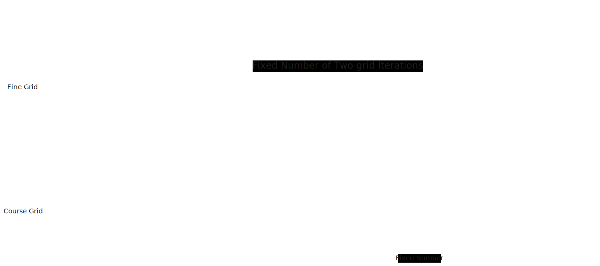
Sketch of the relaxed solver
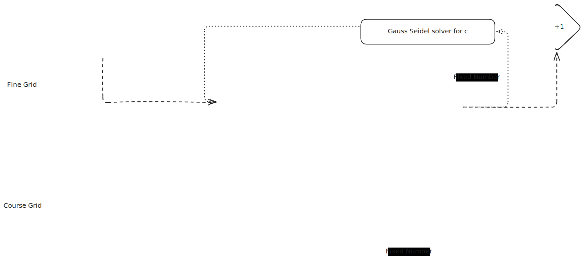
Numerical experiments
Explicit solution of c^\aplha
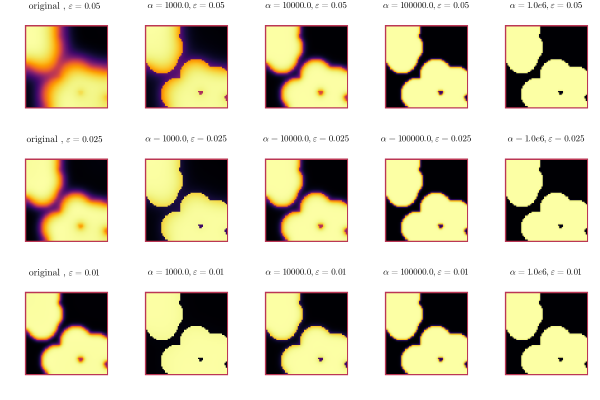
Figure 3: explicit solution of c
- Smaller ε \(\implies\) smaller interface
- Both ε and α have effect on the interface.
- Explicit solution cannot develop an interface.
- Artefacts for small values of α
- No interface for large α
Implicit solution of c
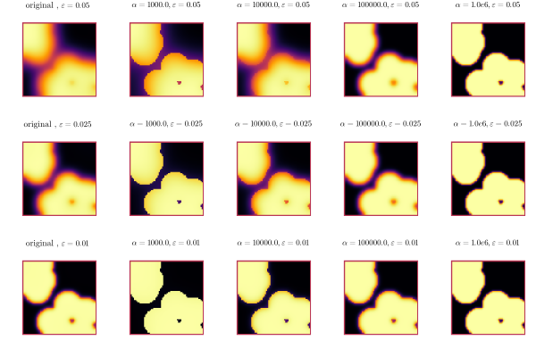
Figure 4: implicit solution of c by alternating solving φ and c
- Better at approximating reference
- At approximately simillar ε
- Struggles with an wide interface
- Suggests optimal value for α
Choice of \( \alpha \) for a fixed \( \varepsilon = 0.008 \)
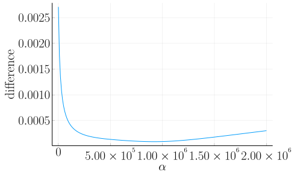
- \(\alpha_{opt} \approx 7.5* 10^5\)
Optimizing α and ε
- We implemented a Monte-Carlo optimizer
- minimizing \(\phi - \phi^\alpha\) after one timestep
- selecting from a normal distribution around the current optimum
- \(\sigma_\varepsilon = 0.01\)
- \(\sigma_\alpha = 10000\)
- Values for α were erratic between \(10^5 \to 10^6\).
- ε was simillar to the ε used in the baseline.
- This suggests α and ε are independent.
Free energy in the phase-field
- The CH equation is related to the following energy functional \[E^{\text{bulk}}[\phi] = \int_{\Omega} \frac{\varepsilon^2}{2} |\nabla \phi |^2 + W(\phi) \, d \operatorname{\mathbf{x}} \]
- The relaxed CH has the following related energy functional similar to the approach in (Corli, Rohde, and Schleper 2014) \[E_{rel}[\phi^{\alpha} , c^\alpha] := \int_{\Omega} \frac{1}{2}\varepsilon^2 \alpha (c^\alpha - \phi^{\alpha})^2 + W(\phi^{\alpha}) \ d \operatorname{\mathbf{x}} \]
- Total energy decreases for the CH equation and the relaxed CH equation \[\frac{d}{dt}E[\phi(t)] \stackrel{\partial_n\phi = 0}{=} - \int_{ \Omega } |\nabla \mu|^2 \ d \mathbf{x}, \qquad \forall t \in (0,T) \]
- \( E^{bulk} \) and \( E_{rel} \) should decrease in time for \( \phi^{\alpha} \).
Baseline and relaxed energy decay
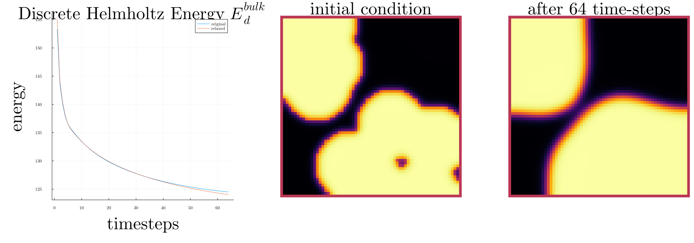
Figure 5: Discrete Energy decrease in both solvers
- Both solvers exhibit energy decay
- Visually less interface surface
- Initially fast decay
- sharp initial conditions
- Relaxed decays faster
- more aggresive
Mass conservation
- As continuous version of mass we use:
- Discrete versions should satisfy:
Baseline mass balance

Figure 6: energy conservation for both solvers
- Machine precision
- Mass conservative

Figure 7: relaxed mass behavior
- Far from machine precision \(0.01 >> 10^{-16}\)
Sub iteration
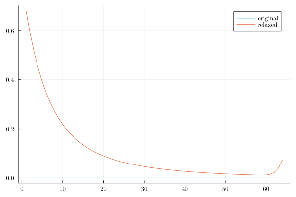
Figure 8: Behaviour of both solvers during sub-iterations
- Relaxed solver uses more subiterations
- each sub iteration was faster in experiments
- Relaxed solver might not converge correct
- Both solvers take comparable wall time
Direct comparison of the baseline solver with the relaxed solver
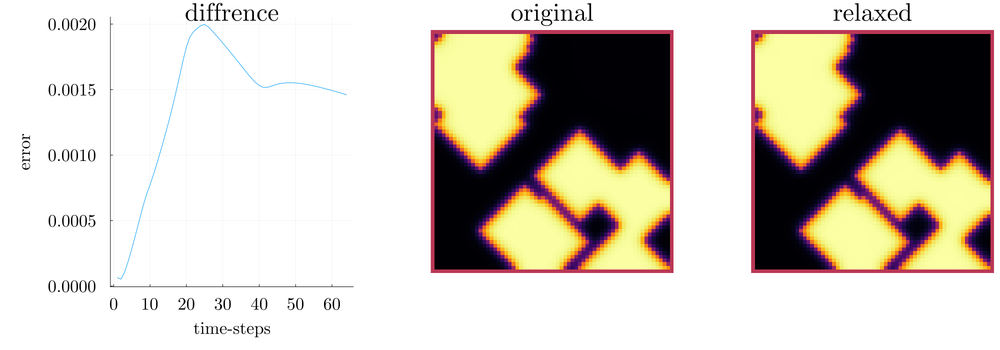
Figure 9: Direct Comparison of both solvers for chosen initial condition
- Cherry picked example with visual difference
- Difference largest in the beginning
- has to smooth sharp initial condition
- Differences largest in areas with high curvature
- Behavior similar
- except for mass conservation
Conclusion
- Baseline is mass conservative.
- Relaxed solver is not mass conservative.
- Results are qualitatively similar.
- differences occur mostly with high curvature
- Relaxed solver depends on optimal \( \alpha \).
- The elliptical system has to be solved implicitly.
Open points
- Runtime evaluations
- Parallel Jacoby solver
- no multi-grid
- Analytical convergence of the relaxation
References
Appendix
Discretization
Domain
Finite Differences
We define \( D_x\mu_{ij}^{n+\frac{1}{2},m} , D_y\mu_{ij}^{n+\frac{1}{2},m} \) in the same way.
Discrete CH equation
Discrete CH equation
b
Time
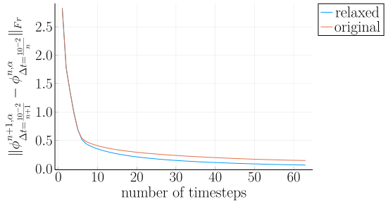
Figure 10: Behaviour of both solvers when varying time-step size
Solver details
Discretized form of the CH equation :
- semi implicit in time
- centered difference in space (Shin, Jeong, and Kim 2011) .
Discretized form of the Ch equation :
- semi implicit in time
- centered difference in space (Shin, Jeong, and Kim 2011) .
Variables
| \( b \) | \( b = DL \cdot \left( \phi_{ij}^{n+1} , \mu_{ij}^{n+\frac{1}{2}} \right)^T - L \left( \phi_{ij}^{n+1} , \mu_{ij}^{n+\frac{1}{2}} \right) \) |
| \( DL \) | Jacobian of \( L \) |
| \( \color{RoyalBlue}{L} \) | Implicit terms of the discrete CH equation |
| \( \color{Maroon}{\left( \zeta_{ij}^n , \psi_{ij}^{n} \right)} \) | Explicit terms of the discrete CH equation |
| \( \Omega_d \) | discrete version of the computational domain \( \Omega \) |